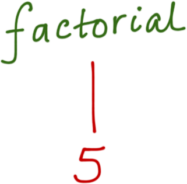
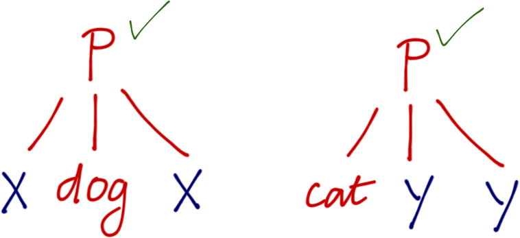
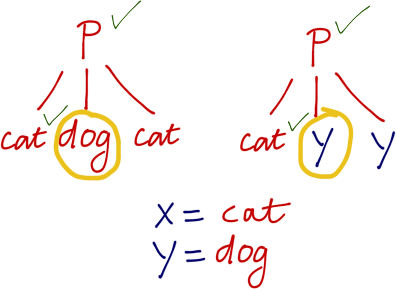
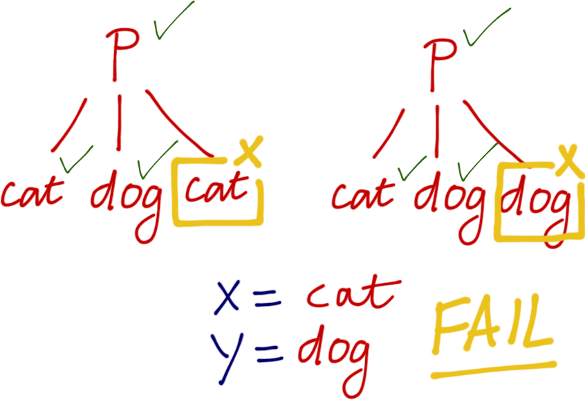

News
- HW 5 is out, due Sun 6/11
Logic Programming
Traditional Languages
Program = Algorithm + Data Structures
Execute
Prolog
Program = Facts + Rules
Query
Logic Programming
Logic Programming
Prolog History
1970s: Logic + Automated Theorem Proving
Developed for Artificial Intelligence
Prolog : Original Vision “Expert Systems”
Collection of Facts
- Carnitas is Mexican isMexican(carnitas)
Collection of Rules
- Mexican food is delicious if isMexican(X) then isDelicious(X)
Queries
- What is a delicious food ? hey! solve for Y. s.t. isDelicious(Y)
Deductions
- Carnitas!
You don’t RUN Prolog, you ASK it QUESTIONS
Declarative Programming
Specify what you want
Specify desired properties of result
Not how to obtain result
Declarative: Ideal for SEARCHING For Results
Declarative Programming
Ideal for Searching Large Space of Results
Philosophy
It is often hard to specify search algorithm
But easy to specify the characteristics of the solution.
Declarative Programming Examples…
Declarative Programming: Orbitz/Expedia/etc.
Collection of Facts
- Airports, Flights, Times, Durations, Costs
Collection of Rules
- If travel from
AtoBwith price (P1) ANDBtoCwith price (P2)…
Then
- travel from
AtoCwith price (P1 + P2) …
Queries
- What is cheapest flight from SAN to JFK with duration < 6 Hrs ?
Declarative Programming: Linear Programming
Collection of Facts
- El Cuervo makes CA Burrito (profit =
$2), Fish Taco (profit =$1)
Collection of Rules
- Burrito Capacity <
200 - Taco Capacity <
400 - Total Capacity <
300
Query: How many burritos and tacos to maximize profit?
max 2.burr + 1.taco /* profit */
s.t. burr < 200 /* burrito capacity */
taco < 400 /* taco capacity */
burr+taco < 300 /* total capacity */
0 <= burr
0 <= taco /* must produce! */ Declarative Programming
Used heavily in many domains (together with statistical methods)
- Scheduling
Travel, Sports, …
- Rule-based Anomaly detection
Credit card fraud!
- SQL (and similar DB Query Languages)
- Find all pairs of stocks, with same price on same day,
More than 50 times last year
Many of these are inspired-by / subsets of Prolog …
Prolog: New Way To Think About Programming …
Prolog: … Programming As Proving!
Plan
Language
- Terms
- Facts
- Queries (Implementation: Unification)
- Rules
- Programs (Implementation: Backtracking Search)
Programming
- Numeric Computation
- Data Structures
- Puzzle Solving
Language: Terms
Prolog Program
- Facts
- Rules
… but facts and rules about what ?
- Terms
Terms are Prolog’s way of representing Data
“Tree-like” values, similar to Ocaml ADTs
Four Kinds of Terms
Constants
Atoms
Variables
Compound Terms
Prolog Terms: Constants
Constants the simplest term, representing primitive values
Basic types like integers, reals
Examples:
1,92,4.4
Prolog Terms: Atoms
Atom: any identifier starting with lower-case
x,alice,taco,giraffe,appleSauce
Atoms are NOT variables
Prolog Terms: Atoms
Atom: any identifier starting with lower-case
x,alice,taco,giraffe,appleSauce
Atoms are not variables
Elements of a single mega enum type
Similar to tags used in ML types (except ML tags are uppercase)
type atoms = x | alice | taco | giraffe | appleSauce | ...
Prolog Terms: Atoms
Atom: any identifier starting with lower-case
x,alice,taco,giraffe,appleSauce
Atoms are Uninterpreted Constants (Names)
Prolog knows NOTHING about the tags, they are just names
- Each tag is equal to itself (more later…)
alice = alicetaco = taco- Each tag is disequal to every other tag
alice = taconever holds in Prolog
Prolog Terms: Variables
Variables: any identifier starting with upper-case
X,Y,Z,Head,Tail,Taco,Burrito,Alice,Bob_is the wildcard variable, similar toML
Variables are quite special …
Even though
x = amakes no sense to Prolog ……
X = adoes have a meaning but not what you might think!
Warning: Upper vs. Lowercase leads to errors
Prolog Terms: Compound Terms
Compound terms are of form atom(term1, term2, term3, ...)
Where each term is one-of
- constant
- atom
- variable
- compound term
Prolog Terms: Compound Terms
Compound terms are of form atom(term1, term2, term3, ...)
Where each term is one-of
- constant
- atom
- variable
- compound term
Examples
x(y, z) % y, z are atoms
parent(alice, bob) % alice, bob are atoms
parent(alice, Child) % alice is an atom, Child is a variableProlog Terms ARE NOT function calls
Prolog Compound Terms
Terms are NOT Function Calls!
More like trees

Prolog Terms: Compound Terms
Compound terms are of form atom(term1, term2, term3, ...)
Each term is one-of
- constant
- atom
- variable
- compound term
An Ocaml Type For Prolog Terms
type term
= Constant of int
| Atom of string
| Variable of string
| Compound of string * term listQUIZ: An Ocaml Type For Prolog Terms
type term
= Constant of int
| Atom of string
| Variable of string
| Compound of string * term list(Hint: atom = lowercase, variable = uppercase)
Which Ocaml value of type term represents Prolog term
parent(alice, bob) ?
A. parent ("alice", "bob")
B. parent (Atom "alice", Atom "bob")
C. [Atom "parent"; Atom "alice"; Atom "bob"]
D. Compound ("parent", [Atom "alice"; Atom "bob"])
E. Compound (Atom "parent", [Atom "alice"; Atom "bob"])
Prolog Compound Terms
Prolog term parent(alice, Charlie) is represented by:
Ocaml Value
Compound ("parent", [Atom "alice"; Var "Charlie"])Tree

QUIZ: An Ocaml Type For Prolog Terms
type term
= Constant of int
| Atom of string
| Variable of string
| Compound of string * term list(Hint: atom = lowercase, variable = uppercase)
What Ocaml value of type term represents Prolog term factorial(5) ?
A. factorial(5)
B. factorial(Atom 5)
C. 120
D. Constant 120
E. Compound ("factorial", [Constant 5])
Prolog Terms
Prolog term factorial(5) is simply the tree 
- The term is just a box containing
5labeledfactorial
Function Symbols
factorialjust a label called a function symbolProlog has no idea about implementation of function …
Prolog Terms = (Tree) Structured Data
Plan
Language
- Terms
- Facts
- Queries (Implementation: Unification)
- Rules
- Programs (Implementation: Backtracking Search)
Programming
- Numeric Computation
- Data Structures
- Puzzle Solving
Language: Facts
Language: Facts
Example
The following facts specify a list of parent-child relationships
parent(kim, holly).
parent(margaret, kim).
parent(herbert, margaret).
parent(john, kim).
parent(felix, john).
parent(albert, felix).Note
kim,holly,margaretetc. are all atomsFacts are just terms (typically without variables.)
Specified by term followed by
.
Prolog maintains a Database of facts
You can make up and add new facts to the collection
We will be able to ask Prolog queries over these facts
Predicates = Function Symbols Used For Facts
Represent functions that evaluate to a boolean
e.g.
parentis a predicate of arity 2 (that takes 2 arguments)
Predicates Are Just Names: No Meaning Or Implementation
parentis a predicate of arity 2 (that takes two arguments)- Programmer mentally notes that:
parent(kim, holly)meanskimis a “parent-of”hollyparent(margaret, kim)meansmargaretis a “parent-of”kim- etc.
Plan
Language
- Terms
- Facts
- Queries (Implementation: Unification)
- Rules
- Programs (Implementation: Backtracking Search)
Programming
- Numeric Computation
- Data Structures
- Puzzle Solving
Running Prolog via Queries
Language: Queries
Standard interface is a REPL shell
$ rlwrap swipl
130f@ieng6-202]:~:501$ swipl
Welcome to SWI-Prolog (Multi-threaded, 32 bits, Version 5.10.5)
Copyright (c) 1990-2011 University of Amsterdam, VU Amsterdam
SWI-Prolog comes with ABSOLUTELY NO WARRANTY. This is free software,
and you are welcome to redistribute it under certain conditions.
Please visit http://www.swi-prolog.org for details.
For help, use ?- help(Topic). or ?- apropos(Word).
?-Language: Queries
Suppose we have a collection of facts saved in lec-prolog.pl
You can load the facts in …
?- consult('lec-prolog.pl').
% foo.pl compiled 0.00 sec, 10,640 bytes
true.… or you can add them one-at-a-time
?- assert(parent(margaret, kim)).Language: Queries
Once facts are loaded, you query Prolog as follows:
Plg: Prompts you to type a query
You: Type a query
Plg: Tries to prove your query
Plg: Prints out the result (or
failure)Repeat (go to 1)
Lets ask some questions!
Language: Queries
The simplest possible query …
?- parent(margaret, john). … a fact but typed at the prompt.
Language: Queries
The simplest possible query …
?- parent(margaret, john). … a fact but typed at the prompt.
Meaning
O Prolog, is this fact in your Database … or can it be inferred from your database?
Language: Queries
The simplest possible query …
?- parent(margaret, john). … a fact but typed at the prompt.
Meaning
O Prolog, is this fact in your database … or can it be inferred from your database?
Prolog Replies
?- parent(margaret, john).
false.- This is not one of the facts we gave it, and,
- We are yet to supply it with rules for inferring new facts.
Language: Queries
A slightly different query yields a different result.
Language: Queries
A slightly different query yields a different result.
?- parent(margaret, kim).
true.- As this was indeed one of the facts loaded in lec-prolog
Pfft. Big deal? Is Prolog just a table lookup?!
Things get more interesting when queries have variables …
Queries With Variables
This is where Prolog starts to depart radically from other paradigms…
?- parent(margaret, X).Meaning
O Prolog, for which value(s) of X is the fact provable ?
Queries With Variables
This is where Prolog starts to depart radically from other paradigms…
?- parent(margaret, X).Meaning
O Prolog, for which value(s) of X is the fact provable ?
Prolog Replies
X = kim.As when prolog plugs-in kim for X,
- It can infer
parent(margaret, kim).
Queries With Variables
Suppose we flip the query.
?- parent(X, kim).O Prolog, for which value(s) of X is parent(X, kim) provable ?
Queries With Variables
Suppose we flip the query.
?- parent(X, kim).O Prolog, who are the parents-of kim?
Queries With Variables
Suppose we flip the query.
?- parent(X, kim).O Prolog, who are the parents-of kim?
Prolog Replies
?- parent(X, kim).
X = margaret ; % [press ';' if you want another solution]
X = john ; % [press ';' if you want another solution]
false. % [thats all folks, no more solutions ]Returns all solutions for X that make parent(X, kim) provable.
Queries With Variables
We can write queries with multiple variables.
?- parent(X, Y).O Prolog, for which pairs X, Y is parent(X, Y) provable?
Queries With Variables
We can write queries with multiple variables.
?- parent(X, Y).O Prolog, for which pairs X, Y is parent(X, Y) provable?
Prolog Replies
?- parent(X, Y).
X = kim, Y = holly ;
X = margaret, Y = kim ;
X = herbert, Y = margaret;
X = john, Y = kim ;
X = felix, Y = john ;
X = albert, Y = felix ;
X = albert, Y = dana ;
X = felix, Y = maya .Enumerates all facts in the parent database.
QUIZ: Queries With Variables
Suppose we want to know if there are any strange circularities in the database:
Does there exist any person who is their own parent ?
Which of the following encodes the above in Prolog?
A. parent(kim, kim)
B. parent(x, x)
C. parent(X, X)
D. parent(X, Y)
E. parent(Y, X)
Queries are magic! 
Queries Work Like Magic
In Java/C# or for that matter ML/Scala/… you would need
- Some
parentOforchildOfmethods- to represent parent-child relationship
- Some looping or iteration
- to search through all pairs
- Instead, Prolog uses facts and queries
- to search forwards and backwards
- to enumerate all results
- in a single uniform declarative manner!
Magic = Unification + Backtracking Search
Plan
Language
- Terms
- Facts
- Queries (Implementation: Unification)
- Rules
- Programs (Implementation: Backtracking Search)
Programming
- Numeric Computation
- Data Structures
- Puzzle Solving
Unification: Prolog’s computational heart
Unification: When does one term MATCH another?
Unification
Two Terms Can Be Unified If
We can substitute values for their variables to make the terms identical
Unification
Two terms can be unified if we can substitute values for variables to make the terms identical
Equality Is Unification
In Prolog, when you write (e.g. in a query)
?- term1 = term2.you are asking whether term1 can be unified with term2.
Unification By Example
Unification: Atoms
Two terms can be unified if we can substitute values for variables to make the terms identical
Example
?- kim = kim.
true.Two same atoms are trivially unified.
Unification: Atoms
Two terms can be unified if we can substitute values for variables to make the terms identical
Example
?- kim = holly.
false.Two different atoms can never be unified.
Unification: Compound Terms Are Recursively Unified
Two terms can be unified if we can substitute values for variables to make the terms identical
Example
?- foo(kim) = foo(kim).
true.As there are no variables, and the terms are already identical.
Example
?- foo(kim) = foo(holly).
false.As there are no variables, and the terms can never be identical.
Unification: Variables
Two terms can be unified if we can substitute values for variables to make the terms identical
Example
?- X = kim.Q: When is the term
Xidentical to the termkim?A: When we substitute
Xwith the valuekim!
Unification: Variables
Two terms can be unified if we can substitute values for variables to make the terms identical
Example
?- foo(X) = foo(kim).Q: When is the term
Xidentical to the termkim?A: When we substitute
Xwith the valuekim!
Prolog Responds
?- foo(X) = foo(kim).
X = kim.- Pretty simple…
QUIZ: Unification With Multiple Variables
Two terms can be unified if we can substitute values for variables to make the terms identical
How does Prolog respond to the following query?
?- foo(X, dog) = foo(cat, Y).A. false
B. X = cat, Y = cat.
C. X = dog, Y = dog.
D. X = dog, Y = cat.
E. X = cat, Y = dog.
Unification With Multiple Variables
Two terms can be unified if we can substitute values for variables to make the terms identical
?- p(X, dog, X) = p(cat, Y, Y).Unification With Multiple Variables
Two terms can be unified if we can substitute values for variables to make the terms identical
?- p(X, dog, X) = p(cat, Y, Y).
The top nodes of both trees have same predicate … go inside.
Unification With Multiple Variables
Two terms can be unified if we can substitute values for variables to make the terms identical
?- p(X, dog, X) = p(cat, Y, Y).
To unify X and cat use substitution X = cat
Unification With Multiple Variables
Two terms can be unified if we can substitute values for variables to make the terms identical
?- p(X, dog, X) = p(cat, Y, Y).
Apply substitution X = cat to both terms. Move on to next leaf…
Unification With Multiple Variables
Two terms can be unified if we can substitute values for variables to make the terms identical
?- p(X, dog, X) = p(cat, Y, Y).
To unify dog and Y use substitution Y = dog …
Unification With Multiple Variables
Two terms can be unified if we can substitute values for variables to make the terms identical
?- p(X, dog, X) = p(cat, Y, Y).
… and apply substitution throughout both terms.
Unification With Multiple Variables
Two terms can be unified if we can substitute values for variables to make the terms identical
?- p(X, dog, X) = p(cat, Y, Y).
Uh oh, now last leaf has different atoms…
Unification With Multiple Variables
Two terms can be unified if we can substitute values for variables to make the terms identical
?- p(X, dog, X) = p(cat, Y, Y).
… impossible to unify cat and dog. Unification fails.
Unification With Multiple Variables
Two terms can be unified if we can substitute values for variables to make the terms identical
?- p(X, dog, X) = p(cat, Y, Y).
false.QUIZ: Recursively Unify Subtrees
Two terms can be unified if we can substitute values for variables to make the terms identical
How does Prolog respond to the following unification query?
?- a(W, foo(W, Y), Y) = a(2, foo(X, 3), Z).A. false. (No unification possible)
B. W = 2, X = 2, Y = 2, Z = 2.
C. W = 2, X = 2, Y = 3, Z = 3.
D. W = 3, X = 3, Y = 2, Z = 2.
C. W = 2, X = 3, Y = 2, Z = 3.
Recursively Unify Subtrees
Two terms can be unified if we can substitute values for variables to make the terms identical
How does Prolog respond to the following unification query?
?- a(W, foo(W, Y), Y) = a(2, foo(X, 3), Z).Subst
W = 2. Query is:a(2, foo(2, Y), Y) = a(2, foo(X, 3), Z).Subst
X = 2. Query is:a(2, foo(2, Y), Y) = a(2, foo(2, 3), Z).Subst
Y = 3. Query is:a(2, foo(2, 3), 3) = a(2, foo(2, 3), Z).Subst
Z = 3. Query is:a(2, foo(2, 3), 3) = a(2, foo(2, 3), 3).Done!
Recursively Unify Subtrees
Two terms can be unified if we can substitute values for variables to make the terms identical
How does Prolog respond to the following unification query?
?- a(W, foo(W, Y), Y) = a(2, foo(X, 3), Z).
W = 2,
X = 2,
Y = 3,
Z = 3.QUIZ: Recursively Unify Subtrees
Two terms can be unified if we can substitute values for variables to make the terms identical
How does Prolog respond to the following unification query?
?- a(W, foo(W, Y), Y) = a(2, foo(X, 3), X).A. false. (No unification possible)
B. W = 2, X = 2, Y = 2, Z = 2.
C. W = 2, X = 2, Y = 3, Z = 3.
D. W = 3, X = 3, Y = 2, Z = 2.
C. W = 2, X = 3, Y = 2, Z = 3.
Recursively Unify Subtrees
Two terms can be unified if we can substitute values for variables to make the terms identical
How does Prolog respond to the following unification query?
?- a(W, foo(W, Y), Y) = a(2, foo(X, 3), X).Subst
W = 2. Query is:a(2, foo(2, Y), Y) = a(2, foo(X, 3), X).Subst
X = 2. Query is:a(2, foo(2, Y), Y) = a(2, foo(2, 3), 2).Subst
Y = 3. Query is:a(2, foo(2, 3), 3) = a(2, foo(2, 3), 2).3 = 2cannot be unified, Fail!
Unification: Powerful Way To Answer Queries
Unification is a Powerful Way To Answer Queries
When we ask
?- parent(margaret, X). Prolog checks if the above term can be unified with any known fact (term).
- If unification succeeds then it replies
true- And also the unifying substitutions for
X - Which are the solutions for the query!
- And also the unifying substitutions for
- If unification fails then it replies
false
Unification is a Powerful Way To Answer Queries
When we ask
?- parent(margaret, X). Prolog checks if the above term can be unified with any known fact (term).
- If unification succeeds then it replies
true(and the solutions forX) - If unification fails then it replies
false
Above Query Has One Solution
?- parent(margaret, X).
X = kim.Unification is a Powerful Way To Answer Queries
When we ask
?- parent(X, kim). Unification is a Powerful Way To Answer Queries
When we ask
?- parent(X, kim). Prolog checks if the above term can be unified with any known fact (term).
- If unification succeeds then it replies
true(and the solutions forX) - If unification fails then it replies
false
Unification is a Powerful Way To Answer Queries
When we ask
?- parent(X, kim). Prolog checks if the above term can be unified with any known fact (term).
- If unification succeeds then it replies
true(and the solutions forX) - If unification fails then it replies
false
This Query Has Many Solutions
?- parent(X, kim).
X = margaret ;
X = john .Unification is a Powerful Way To Answer Queries
Finally, when we ask
?- parent(X, Y). Unification is a Powerful Way To Answer Queries
Finally, when we ask
?- parent(X, Y). Prolog checks if the above term can be unified with any known fact (term).
- If unification succeeds it replies
true(and solutions forX,Y) - If unification fails it replies
false
Unification is a Powerful Way To Answer Queries
Finally, when we ask
?- parent(X, Y). Prolog checks if the above term can be unified with any known fact (term).
- If unification succeeds it replies
true(and solutions forX,Y)
This Query Has Many Solutions: All known facts
?- parent(X, Y).
X = kim, Y = holly ;
X = margaret, Y = kim ;
X = herbert, Y = margaret;
X = john, Y = kim ;
X = felix, Y = john ;
X = albert, Y = felix ;
X = albert, Y = dana ;
X = felix, Y = maya .Unification Lets Prolog Answer Queries Magically!
Plan
Language
- Terms
- Facts
- Queries (Implementation: Unification)
- Rules
- Programs (Implementation: Backtracking Search)
Programming
- Numeric Computation
- Data Structures
- Puzzle Solving
Rules
Digression: Conjunctions, Queries about MANY terms
Conjunction: Comma-separated Sequence of terms
Often useful to ask questions over multiple terms.
- For example, to determine if
margaretis the grandparent ofholly
Conjunction: Comma-separated Sequence of terms
Often useful to ask questions over multiple terms.
- For example, to determine if
margaretis the grandparent ofholly
?- parent(margaret, X), parent(X, holly).Is there a person
Xwho is a child ofmargaretAND a parent ofholly?Is there
Xs.t.parent(margaret, X)ANDparent(X, holly)?
Conjunction: Comma-separated Sequence of terms
Often useful to ask questions over multiple terms.
- For example, to determine if
margaretis the grandparent ofholly
?- parent(margaret, X), parent(X, holly).Is there a person
Xwho is a child ofmargaretAND a parent ofholly?Is there
Xs.t.parent(margaret, X)ANDparent(X, holly)?
Apparently
?- parent(margaret, X), parent(X, holly).
X = kim.Conjunction: Comma-separated Sequence of terms
Often useful to ask questions over multiple terms.
- For example, to find the great-grandparents of
kim
Conjunction: Comma-separated Sequence of terms
Often useful to ask questions over multiple terms.
- For example, to find the great-grandparents of
kim
?- parent(GGP, GP), parent(GP, P), parent(P, kim).Note: how we link the terms with a variable to capture relationships.
Conjunction: Comma-separated Sequence of terms
Often useful to ask questions over multiple terms.
- For example, to find the great-grandparents of
kim
?- parent(GGP, GP), parent(GP, P), parent(P, kim).Note: how we link the terms with a variable to capture relationships.
Prolog finds appropriate unifiers and replies
?- parent(margaret, X), parent(X, holly).
GGP = john,
GP = felix,
P = albert.i.e. john is a great-grandparent following the above chain.
QUIZ: Conjunctions
Which of these queries is true iff margaret and kim are (half-) siblings?
A. parent(margaret, kim)
B. parent(margaret, X), parent(X, kim).
C. parent(kim, X), parent(X, margaret).
D. parent(margaret, X), parent(kim, X).
E. parent(X, margaret), parent(X, kim).
Recap: Conjunctions
Conjunctions let us mine the database for complex relationships…
… but its cumbersome to repeatedly write down long queries
We need a way to compose complex queries from simple queries…
Rules
Rules: Complex Predicates from Simple Queries
Format
headQuery :- condQuery1, condQuery2, condQuery3,...Rules: Complex Predicates from Simple Queries
Format
headQuery :- condQuery1, condQuery2, condQuery3,...Intuition 1 (Forwards)
If you can prove
condQuery1ANDcondQuery2AND...Then you can prove
headQuery
Rules: Complex Predicates from Simple Queries
Format
headQuery :- condQuery1, condQuery2, condQuery3,...Intuition 2 (Backwards)
To prove the goal
headQuery…Prove subgoals
condQuery1ANDcondQuery2AND …
Rules: Complex Predicates from Simple Queries
An Example: Defining a grandparent predicate
Our database includes a
parentpredicateLet us use it to define a
grandparentpredicate
Rules: Complex Predicates from Simple Queries
An Example: Defining a grandparent predicate
grandparent(GP, GC) :- parent(GP, P), parent(P, GC).Intuition
GP is a grandparent of GC if GP is a parent of P and P is a parent of GC
Rules: Complex Predicates from Simple Queries
An Example: Defining a grandparent predicate
grandparent(GP, GC) :- parent(GP, P), parent(P, GC).Querying The Defined Predicate
?- grandparent(X, kim). % who are the grandparents of kim
X = herbert ; % hit ; to see next
X = felix ; % hit ; to see next
false. % thats it!Rules: Complex Predicates from Simple Queries
An Example: Defining a grandparent predicate
grandparent(GP, GC) :- parent(GP, P), parent(P, GC).Querying The Defined Predicate
?- grandparent(X, kim). % who are the grandparents of kim
X = herbert ; % hit ; to see next
X = felix ; % hit ; to see next
false. % thats it!How? Because Prolog can prove
?- parent(herbert, P), parent(P, kim). %% Solution 1. X = herbert
P = margaret.
?- parent(felix, P), parent(P, kim). %% Solution 2. X = felix
P = john .QUIZ: Complex Predicates from Simple Queries
Which of the following is a valid greatgrandparent predicate?
(Btw, greatgrandparent is the parent of a grandparent.)
% A
greatgrandparent(X, Y) :- parent(X, Y), grandparent(X, Y).
% B
greatgrandparent(X, Y) :- parent(X, Z), grandparent(Z, Y).
% C
greatgrandparent(X, Y) :- grandparent(X, Z), parent(Z, Y).
% D
greatgrandparent(X, Y) :- parent(X, Z), parent(Z, Y).
% E
greatgrandparent(X, Y) :- parent(X, Z), parent(Z, Z1), parent(Z1, Y).Rules: Complex Predicates from Simple Queries
An Example: Defining a greatgrandparent predicate
greatgrandparent(GGP, GC) :- parent(GGP, GP), grandparent(GP, GC).Rules: Complex Predicates from Simple Queries
An Example: Defining a greatgrandparent predicate
greatgrandparent(GGP, GC) :- parent(GGP, GP), grandparent(GP, GC).Querying The Defined Predicate
?- greatgrandparent(X, holly).
X = herbert.That was our first Prolog program!
Plan
Language
- Terms
- Facts
- Queries (Implementation: Unification)
- Rules
- Programs (Implementation: Backtracking Search)
Programming
- Numeric Computation
- Data Structures
- Puzzle Solving
Prolog Programs = Facts + Rules!
Prolog Programs = Facts + Rules!
Facts and Rules are two kinds of clauses
Fact: Clause without any conditions
Rules: Clause with conditions
Programs
Basic Facts / Predicates
Rules for generating new Facts / Predicates
Prolog Programs = Facts + Rules!
Complex Programs need Complex Predicates with Multiple Rules
Scope
Multiple Rules: Disjunction
Multiple Rules: Recursion
Prolog Programs = Facts + Rules!
Complex Programs need Complex Predicates with Multiple Rules
Scope
Multiple Rules: Disjunction
Multiple Rules: Recursion
Programs = Facts + Rules : Scope
A word about scope.
In the grandparent rule, the variable GP appears twice
greatgrandparent(GGP, GC) :- parent(GGP, GP), grandparent(GP, GC).Scope: All Variables Are Local To A Single Rule
In Prolog, the scope of a variable is the single rule containing it.
There is no connection between variables across rules.
Programs = Facts + Rules : Scope
A word about scope.
Scope: All Variables Are Local To A Single Rule
In Prolog, the scope of a variable is the single rule containing it.
There is no connection between variables across rules.
Example
foo(P) :- bar(P). % There is no connection between P
stuff(P) :- thing(P). % across the two rulesProlog Programs = Facts + Rules!
Complex Programs need Complex Predicates with Multiple Rules
Scope
Multiple Rules: Disjunction
Multiple Rules: Recursion
Complex Predicates: Disjunction
Lets write a predicate has_family which is true for persons who
either have a parent
or have a child
Complex Predicates: Disjunction
Lets write a predicate has_family which is true for persons who
either have a parent
or have a child
has_family(X) :- parent(X, _). % if X is the parent of some _
has_family(X) :- parent(_, X). % if X is the child of some __ is a wildcard or dont-care variable (as in ML, Scala)
Disjunction via Multiple Rules
If we can prove
parent(X, _)Then we can provehas_family(X)If we can prove
parent(_, X)Then we can provehas_family(X)
Complex Predicates: Disjunction
Lets write a predicate has_family which is true for persons who
either have a parent
or have a child
has_family(X) :- parent(X, _). % if X is the parent of some _
has_family(X) :- parent(_, X). % if X is the child of some _Executing the Query
?- has_family(holly).
true. % Second rule fires for holly
?- has_family(mugatu).
false. % Neither rule fires for mugatuComplex Predicates: Disjunction
Lets write a predicate has_family which is true for persons who
either have a parent
or have a child
has_family(X) :- parent(X, _). % if X is the parent of some _
has_family(X) :- parent(_, X). % if X is the child of some _Can be abbreviated to
has_family(X) :- parent(X, _) ; parent(_, X).Semicolon ; indicates disjunction.
Prolog Programs = Facts + Rules!
Complex Programs need Complex Predicates with Multiple Rules
Scope
Multiple Rules: Disjunction
Multiple Rules: Recursion
Complex Predicates: Recursion
Lets write a predicate ancestor(Anc, Child) which is true if
parent(Anc, Child)… orparent(Anc, P)andparent(P, Child)… orparent(Anc, GP)andparent(GP, P)andparent(P, Child)… or… if some chain of parent-links holds between
AncandChild.
Complex Predicates: Recursion
Lets write a predicate ancestor(Anc, Child) which is true if
… if some chain of parent-links holds between Anc and Child.
Base Case
If
Ancis the parent ofChildancestor(Anc, Child) :- parent(Anc, Child).
Inductive Case
If
Pis the parent ofChildandAncis an ancestor ofPancestor(Anc, Child) :- parent(P, Child), ancestor(Anc, P).
Complex Predicates: Recursion
Lets write a predicate ancestor(Anc, Child) which is true if
… if some chain of parent-links holds between Anc and Child.
ancestor(Anc, Child) :- parent(Anc, Child).
ancestor(Anc, Child) :- parent(P, Child), ancestor(Anc, P).Complex Predicates: Recursion
Lets write a predicate ancestor(Anc, Child) which is true if
… if some chain of parent-links holds between Anc and Child.
ancestor(Anc, Child) :- parent(Anc, Child).
ancestor(Anc, Child) :- parent(P, Child), ancestor(Anc, P).Lets take it out for a spin!
First, lets find descendants (forwards)
?- ancestor(kim, X).
X = holly.Complex Predicates: Recursion
Lets write a predicate ancestor(Anc, Child) which is true if
… if some chain of parent-links holds between Anc and Child.
ancestor(Anc, Child) :- parent(Anc, Child).
ancestor(Anc, Child) :- parent(P, Child), ancestor(Anc, P).Lets take it out for a spin!
Next, lets find ancestors (backwards)
?- ancestor(X,kim).
X = margaret ;
X = john ;
X = herbert ;
X = felix ;
X = albert .kim has a long ancestry!
Pretty neat: go forward or back, in just 2 lines…
…Try doing that in any other language!
Plan
Language
- Terms
- Facts
- Queries (Implementation: Unification)
- Rules
- Programs (Implementation: Backtracking Search)
Backtracking Search
TBD
Order Matters!
TBD
Language
- Terms
- Facts
- Queries (Implementation: Unification)
- Rules
- Programs (Implementation: Backtracking)
Programming
- Numeric Computation
- Data Structures
- Puzzle Solving
Numeric Computation
TBD
Functions as Predicates
TBD
Programming
- Numeric Computation
- Data Structures
- Puzzle Solving
Data Structures: Lists
TBD
Programming
- Numeric Computation
- Data Structures
- Puzzle Solving
Data Structures: Accumulators
TBD
Puzzle Solving
- Towers of Hanoi
- Farmer, Wolf, Goat, Cabbage
Towers of Hanoi
TBD
Farmer, Wolf, Goat, Cabbage
TBD